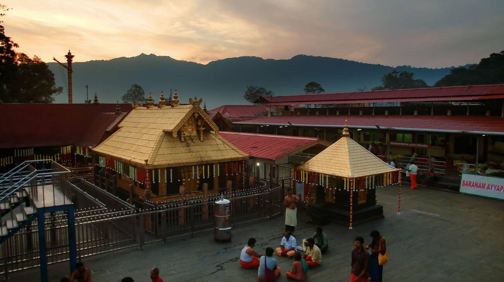

About Sabarimala & Traditions


Divine Presence & History


Sabarimala Sree Dharma Sastha Temple, dedicated to Lord Ayyappan, is one of the most ancient and prominent Sastha temples in Kerala. Situated amidst the dense forests and hills of the Western Ghats, it is a significant pilgrimage center attracting millions of devotees annually. The temple's history is steeped in legend and devotion, with its origins tracing back centuries. The pilgrimage to Sabarimala is unique, emphasizing austerity, self-discipline, and devotion, culminating in the darshan of Lord Ayyappan.